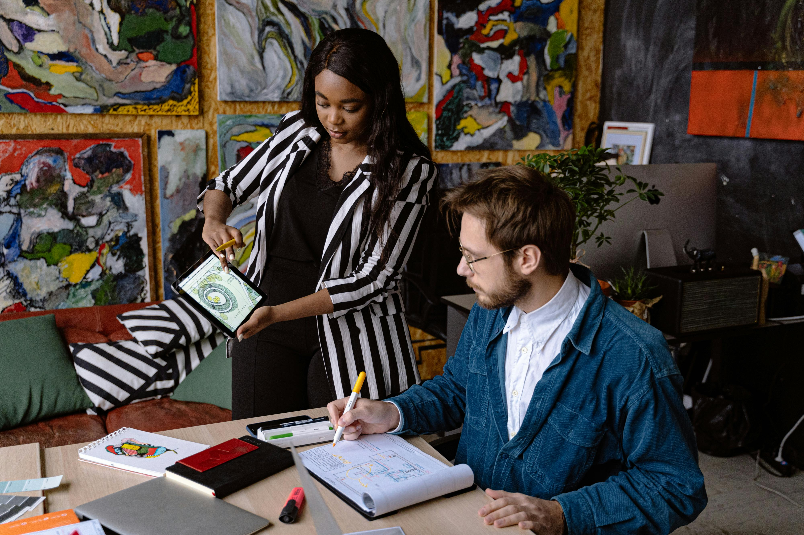

Nuevas Herramientas de Photoshop 2024
Adobe ha lanzado una nueva actualización para Photoshop 2024 que incluye herramientas innovadoras diseñadas para mejorar la productividad y la creatividad de los diseñadores gráficos. Esta actualización introduce una variedad de nuevas funcionalidades, tales como la edición de capas en 3D, pinceles inteligentes y un rendimiento mejorado que permite trabajar con archivos de gran tamaño de manera más eficiente. Los usuarios ahora pueden disfrutar de una experiencia de diseño más fluida y profesional.

La Evolución del Diseño Gráfico
El diseño gráfico ha pasado por una impresionante evolución desde sus inicios en el siglo XIX hasta la era digital actual. En sus primeras etapas, el diseño gráfico estaba estrechamente vinculado a las técnicas de impresión y los carteles publicitarios. Con la llegada de las computadoras, la disciplina experimentó una transformación radical, permitiendo a los diseñadores experimentar con nuevas herramientas y técnicas digitales. Hoy en día, el diseño gráfico es una parte integral de la comunicación visual, utilizada en una amplia gama de medios y plataformas.

Tendencias en Diseño Gráfico
Explora las tendencias más impactantes en el mundo del diseño gráfico para este año. El diseño gráfico está en constante evolución, adaptándose a nuevas tecnologías y cambiando las preferencias de los consumidores. Este año, las tendencias incluyen un mayor uso de colores vibrantes y audaces, tipografías experimentales, y la integración de elementos 3D en diseños bidimensionales. Además, se espera ver un aumento en el uso de ilustraciones personalizadas y gráficos animados, que ayudan a captar la atención del público y a transmitir mensajes de manera más efectiva.

Maestría en Composición Fotográfica
La composición fotográfica es una habilidad esencial que todo fotógrafo debe dominar. Se trata de la forma en que los elementos visuales se organizan dentro de una fotografía para crear una imagen equilibrada y atractiva. Desde el uso de la regla de los tercios hasta la exploración de perspectivas únicas, la composición puede transformar una foto ordinaria en una obra maestra visual. Aprender y aplicar estas técnicas puede mejorar significativamente la calidad de tus fotos y tu capacidad para contar historias a través de imágenes.